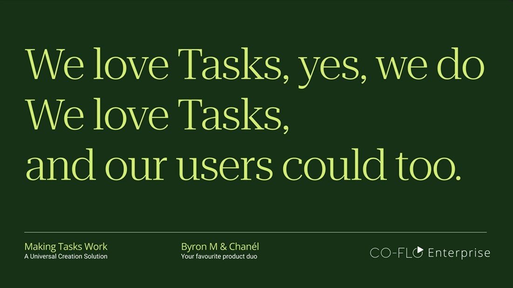
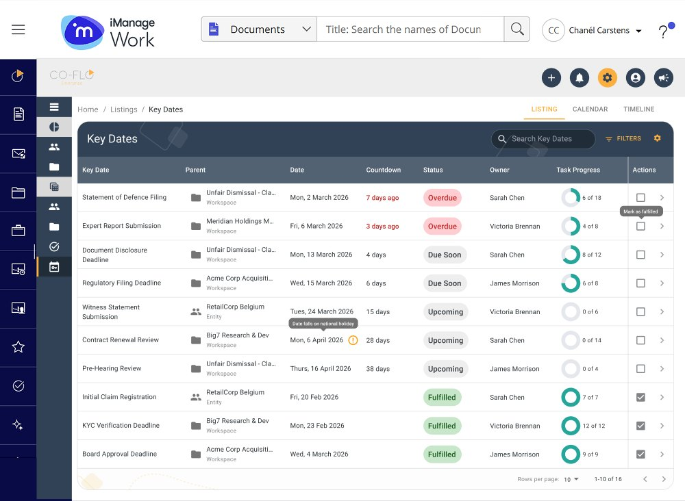
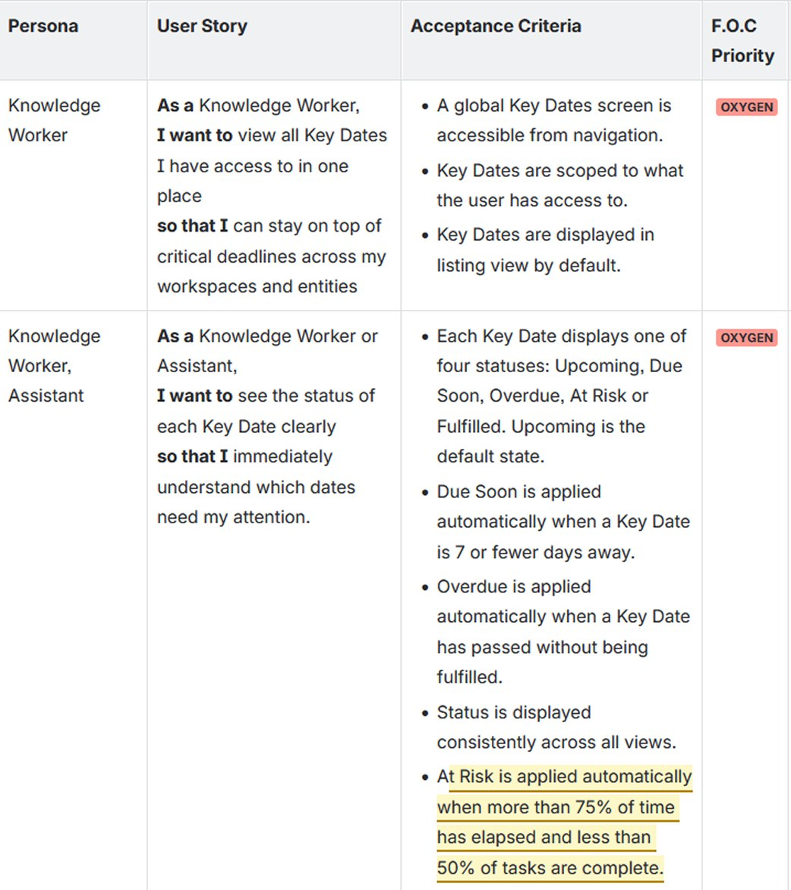
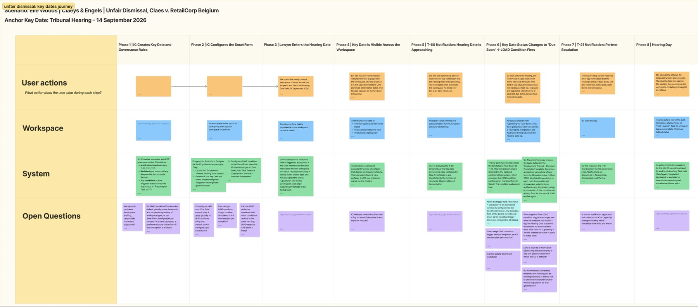

Legal Software So Good It Belongs in a Courtroom Drama
Opening Statement
Co-Flo is a document, contract and work management platform for legal and enterprise procurement teams. In legal, a missed deadline can turn into a malpractice claim, so the tools that track the work carry real weight.
Work Product Management (WPM) is the part of Co-Flo that keeps that work moving: the tasks, deadlines and owners between a document being drafted and a matter being closed.
I was the sole Senior Product Designer on two connected WPM workstreams. Tasks started as a facelift and became a research-led redesign. Key Dates was a new capability I owned end to end after our Head of Product, who was also my PM, left the business.

- I built my own Pendo dashboards for Tasks and found retention had fallen to 3%. The facelift brief became a redesign.
- Task creation went from 5+ clicks to 2, from anywhere across Co-Flo's three products.
- When my PM left and my dev lead went on leave at the same time, I ran product for Key Dates: four PRDs, stakeholder sessions and the design team's priorities.
- My design handover format and a Claude skill I built for writing PRDs both became team standards.
Exhibit A: The 3%
Tasks came to me as a UI refresh. Modernise the look, nothing structural. The longer I spent in it, the more I suspected the problem went deeper than how it looked.
Co-Flo had Pendo, but nobody really owned it. The person who set it up had left, and the existing dashboards answered other teams' questions. So I watched YouTube tutorials after hours until my eyes bled, then built a Tasks dashboard from whatever endpoints I could get.
I paired it with AI-assisted research into legal and SaaS pain points, and the numbers were hard to ignore.

drop in account activity within three months of a user's first visit
retention in November 2025
visitors came back that month
That isn't a visual problem.
The Head of Product and I took the findings to the business, and the facelift became a redesign.
Cross-Examining My Own Theory
Pendo told me users were leaving. It didn't tell me why. So I checked the data against what our Implementation Consultants heard from customers every day, and landed on three assumptions worth testing.
Navigation burden
Creating a task meant leaving your work, finding a separate screen, then finding your way back.
Cognitive load
On the way there, users carried deadlines, assignees and details in their heads.
Context switching
Once you left the workspace, you lost your reference point, so either accuracy or speed had to give.
Then I looked at how HubSpot, Asana, ClickUp and Contrabook handle the same friction. They all pointed the same way: creating a task should never interrupt the work that prompted it.
Objection! Every Screen Was a Door
My answer was universal task creation: one way to create a task from anywhere in Co-Flo's three products, without leaving what you're doing.

The result
5+ to 2clicks to create a task
What I designed
- Always thereA persistent button in the navigation, on every screen
- Stays in contextA side panel instead of a new page, so the work you're looking at stays visible to copy from and check against
- Knows where you areWorkspace and record details filled in automatically, based on where you already are
HubSpot and Asana both ask which record or project a task belongs to, even when you're already inside it. Co-Flo knows where you are, so it shouldn't need to ask.
The full design covered hierarchy, templates, task types, governance and inline editing for admins and end users. Sales started using my slides in client conversations before the feature was built.
Order in the Court
Key Dates are the dates legal work hangs on, like filing deadlines, contract renewals and court dates. Any piece of work can be linked to one, whether that's a contract, a document, a task or news back from court. Each date has owners with RACI roles, so when someone adds work to a date you own, you hear about it in the channels you already use.


The epic had just been signed off when the Head of Product, who was also my PM, left. Hiring a replacement took months, and Co-Flo never got there. At the same time, my dev team lead went on a two-week holiday. I was still new, and suddenly the only member of the product trio in the room.
Most of the decisions behind that epic had lived with the Head of Product, and they left when he did. I went into stakeholder meetings without knowing what had been decided before, and worked it out as I went.
I'd already watched another team lose its PM and its work slowly fade. I believed in Key Dates too much to let that happen, so I stepped into product:
- Wrote four PRDs: end-user experience, field configuration, admin governance and the Unified Deadline View
- Briefed the other designers and allocated work based on each person's strengths
- Ran alignment sessions with legal, sales and product stakeholders
- Presented the PRDs at our FOC session, where every department head votes work into one of three tiers:
The hardest conversation was about sequencing. The flashy features everyone wanted were built on foundations nobody found exciting. Either both got built, or both waited. I kept making that case until it stuck.

Product design is half product. When product needs someone to step in, a product designer should be ready.